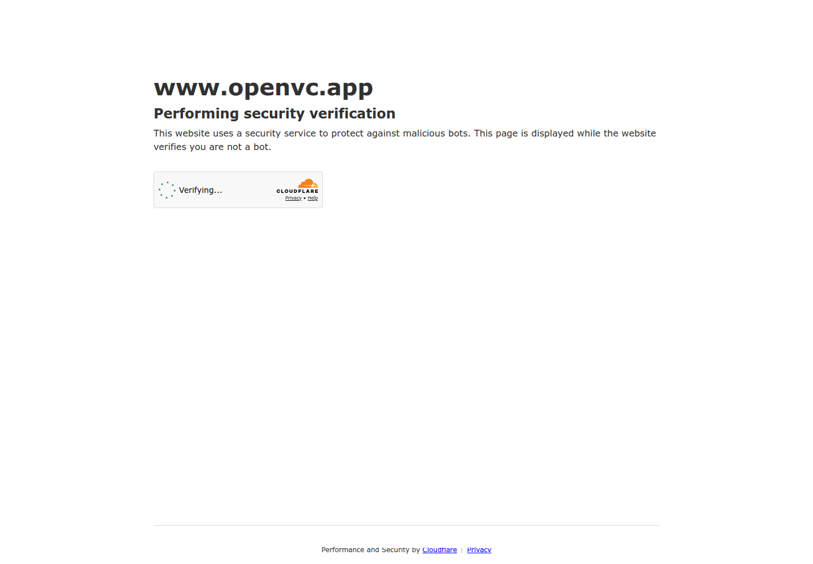

Profile
- Company
- OpenVC
- Url
- https://www.openvc.app/
- Source Category
- Capital & discovery marketplaces
- Research Status
- Deep Cited Research / Draft Complete
- Current Status
- live - active fundraising platform/help docs updated 2026.
- Founded Launch Year
- 2021 launch; monetized March 2023
- Company Age
- 5 years since launch
- Hq Country
- United States per LinkedIn; team appears distributed/indie
- Operating Area
- Global
- Target Users
- Early-stage startup founders raising capital; VC firms, angel networks, family offices; investors receiving deal flow
- Product Category
- founder-investor / capital; investor database; fundraising CRM; pitch/deck submission and analytics
Product Flows
- Swipe Card Interface
- no
- Mutual Match
- no
- Ai Matching Scoring
- yes - investor fit/filtering and inbound flow
- Ai Deck Scoring
- yes - deck review via Premium
- Founder To Founder Flow
- no
- Founder To Investor Flow
- yes - investor search, pitching, CRM, warm intros
- Project Profiles
- yes - startup/pitch deck and investor profiles
- Messaging Collaboration
- yes - CRM/team collaboration, follow-ups, AI emails
- Mobile App
- not found
- Web App
- yes
Security & Documents
- Nda Gated Unlock
- not found
- Data Room
- not found
- E Signature
- no
- Meeting Prep Ai Briefing
- not found
Pricing, Funding & Traction
- Pricing Model
- founders mostly free; Premium $99/month or $299/year; investors free; LP Navigator $300/month
- Business Model
- freemium founder SaaS, premium subscriptions, LP Navigator subscription; no equity/success fee
- Total Funding
- not found; official FAQ says bootstrapped/community-driven, secondary interview says small angel funding in 2023
- Funding Rounds
- not found / bootstrapped implied
- Investors
- not found
- Funding Source Type
- bootstrapped plus small angel funding per secondary interview
- Last Funding Date
- 2023 per secondary interview; exact date not found
- Users Traction
- Company-reported: 6,000+ VC firms/angel networks/family offices; 500+ pitches weekly; 40,000+ startups; 20,000+ verified investors; startups have gone on to raise $1B+
- Deals Funding Facilitated
- $1B+ raised by startups using OpenVC, per about FAQ.
- Partnerships
- not found
- Media Coverage
- Product Hunt launch referenced by own about page.
- Product Update Activity
- Help docs updated Apr 27 2026; active current pages.
- Acquisition Rebrand History
- Launched March 2021; monetized Premium plan from March 2023.
Scores
- Product Overlap Score
- 4
- Feature Maturity Score
- 3
- Market Traction Score
- 3
- Funding Strength Score
- 3
- Ai Depth Score
- 3
- Nda Security Strength Score
- 4
- Network Moat Score
- 3
- Direct Threat Score
- 3.4
- Source Confidence
- High
Evidence Notes
- Primary Sources
- https://www.openvc.app/about
https://docs.openvc.app/en/articles/13262685-how-much-does-openvc-cost
https://docs.openvc.app/en/articles/13228651-source-startups
https://www.openvc.app/blog
https://docs.openvc.app/en/articles/13228447-getting-investor-inbound - Secondary Sources
- https://www.linkedin.com/company/openvc-app
https://eqvista.com/stephane-nasser-openvc/ - Unsupported Claims
- No independent verification of $1B+ raised through platform.
- Contradictions
- OpenVC about page says 20,000+ verified investors; LinkedIn snippet is likely stale.
- Last Checked
- 2026-07-19
- Notes
- High overlap with BizMatch investor discovery/CRM; less security/NDA/data-room overlap.
Registration Flow
Research date: 2026-07-19. Screenshots are sanitized public copies from the private registration-flow capture set; credentials, tokens, verification links/codes, browser chrome, and private identifiers are not intentionally published.
Outcome: stopped at CAPTCHA / Cloudflare / anti-bot verification.
Stop point: Initial Cloudflare 'Performing security verification' page, before reaching the OpenVC homepage, registration entry, credential entry, account creation, or email verification
Blocker / boundary: OpenVC placed a Cloudflare bot/security verification challenge in front of the public homepage. The task explicitly requires stopping at Cloudflare and never bypassing anti-bot controls.
- Cloudflare security-verification stop point. Opening OpenVC's official homepage through the required local automated browser Chromium service immediately displayed a Cloudflare security-verification page. It states that the site is verifying the visitor is not a bot and shows an active 'Verifying...' control. The challenge was not attempted or bypassed.
